After years of working with over 100 startups and businesses of all shapes, sizes, we know many organizations don’t have access to the marketing tools they need to help them grow.
It’s a problem we’ve had to get around ourselves. Our clients want results, and they want them fast. So we evolved up our own marketing stack – a list of 55 marketing tools that we use to help businesses grow.
First, we’ll dive into one of our most important marketing tools — one that we developed internally out of a need for streamlined, impactful analysis.
It’s calledSpotlightand it enables our strategists to quickly spot growth opportunities and resource optimizations. We even use Spotlight to win clients – tapping into its automated growth audit tech to immediately illuminate blindspots across the entire business funnel.
Purpose:
Automated growth audits that pull the most impactful reports across 10+ key tools into one cohesive story.
Illuminates opportunities to double-down and leaks that need fixing.
A watchdog for growth blindspots.
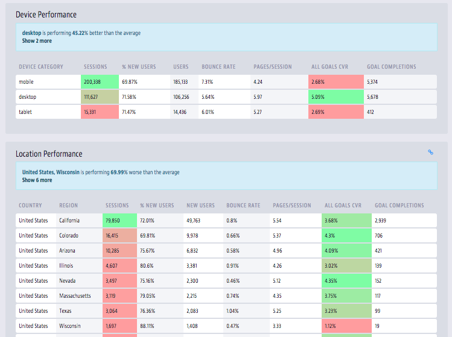
Why We Use It:
Ladder strategists start every relationship with a full growth audit – a deep-dive into all analytics, website, ad accounts, and competitor properties. Growth audits are crucial to increasing the success rates of your strategy. We even wrote 100-page guide on how to manually perform your own (yes, the resource is free).
Now, these audits used to take us up to a week to complete thoroughly. With Spotlight we can generate a growth audit in just a few minutes! This dramatically increases our access to impactful insights, giving us actionable snapshots of our growth levers whenever we need it.
We also built the Ladder Planner – which we developed internally out of a need for better workflow, collaboration, and reporting functionality for our tests. The Planner enables our strategists to run smart monthly marketing sprints for our clients. Not a workday goes by without Ladder strategists poring over tests, marketing tactics, and funnel analysis in the Planner.
Purpose:
Marketing recommendation engine powered by a database of 1000+ tactics based on $1,000,000s spent in performance testing.
Enables users to run marketing tests from a tactic database, get tactic recommendations, or manually create their own.
Users can plan, document, and execute weekly marketing sprints, tracking all relevant performance data directly within the Ladder Planner.
Why We Use It:
At Ladder, we have a very robust growth hacking process. It drives everything we do for clients on a weekly basis. It’s essentially a smart process based on years of work and thousands of campaigns that lets us handle a massive weekly workload.
But that massive workload would still be impossible without proper tracking and reporting for clients and easy-to-use marketing tools for strategists to do their jobs. That’s why we created and keep iterating on the Ladder Planner. Everything we do on a weekly basis starts and ends here:
Use Cases:
Marketing test recommendations – The Ladder Planner will give recommendations based on the success rates of prior tests, the needs of specific businesses, and the strategy in play. Strategies come from a database of 1000+ proven growth tactics we’ve used in the past.
Marketing sprints – The Ladder Planner lets you set up and manage weekly marketing sprints, choosing the tests you’ll run for any given week, uploading assets and test details, and tracking performance.
Funnel analysis – Once tests run, you can use the Ladder Planner to generate funnel reports based on test performance. This lets you decide whether to double down on a test that shows a lot of promise or dump it and move on to another tactic.
That’s where we start and end every workday. But while the Spotlight and the Ladder Planner let us manage our entire growth process in one place, it’s the marketing tools we use outside the portal that then implement our monthly marketing sprints.
Tracking website traffic behavior (pageviews, sessions, time on page, traffic sources, etc…)
Tracking website goals (clicks, signups, form completions, new leads, etc…)
Tracking AdWords ad campaign performance (quality, conversion rate, lead gen, etc…)
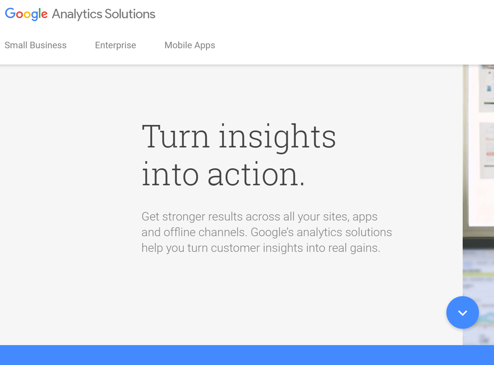
Why We Use It:
Google Analytics is the basis for all website traffic information we use to make intelligent marketing decisions. From understanding which traffic sources convert at a high rate to determining the performance of ad campaigns and more, Google Analytics helps us understand the audiences that work well for the businesses we work with.
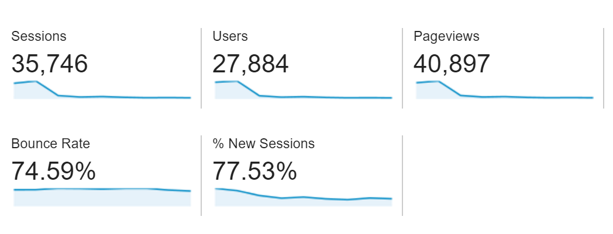
Knowing who our clients’ audiences are, how they behave on their website, where they find out about their businesses, and how they interact with the site’s content tells us what we need to do to drive growth. Whether you’re implementing other marketing tools like Sumo to decrease bouncing traffic with exit intent modals or creating Facebook ad campaigns because Facebook traffic converts at a high rate, all that data can be tracked with Google Analytics.
Use Cases:
Tracking leads generated – You can set up goals in Google Analytics to track when a form submission is completed. This will let you know every time your website generates a new lead.
Tracking ad traffic – Your ad may be getting clicks, but are you targeting a high-quality audience? You won’t know unless you see what they’re doing on your site. Google Analytics will let you (with proper UTM tracking) see how your ad’s audience is behaving and whether they’re converting.
Tracking high-level traffic information – Google Analytics has powerful tracking for pageviews and sessions that let you make decisions on which parts of your website perform well.
Example: got a content strategy going? You can track pageviews from different sources to figure out which social media platforms drive the highest quality traffic.
Easy site tag and code snippet management for your website
Helps you quickly add in code from 3rd party marketing tools and Google services
Removes the need to edit website code to add tags/snippets and event tracking
Why We Use It:
We use Google Tag Manager to set up other marketing tools like Google Analytics, AdWords, Facebook pixels, and a ton of other services for both our websites and for our clients. It’s a dead-simple, easy to use service that removes the need to add code manually.
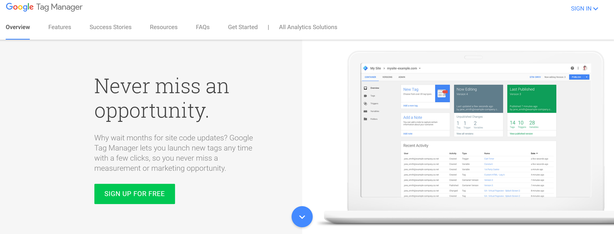
Use Cases:
Set up Google Analytics – Google Analytics is Google’s free and powerful site analytics tool. GTM makes it easy to add in GA code to your site so you can start tracking how visitors behave on your site and where they come from.
Add 3rd party tools – Many 3rd party marketing tools need you to add lines of code to your site. Facebook’s ads platform, for example, needs a tracking pixel. Optimizely requires a snippet in order to run A/B tests. Adding/managing these tags is easy with GTM.
SEO metrics and analysis based on Google search results
Submitting sitemaps and getting your site crawled by the Googlebot
Powerful keyword planning tool based on Bing search trends
Why We Use It:
All our SEO work starts with getting set up on Google Search Console. From adding a sitemap to tracking keywords that we rank, Search Console is our go-to dashboard for SEO research.
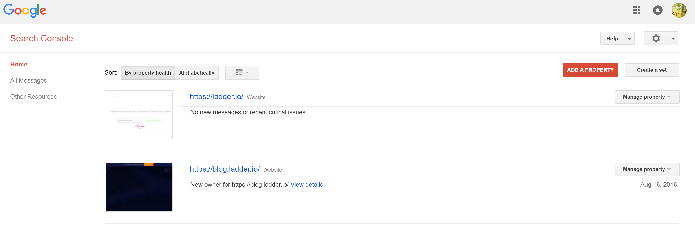
Use Cases:
Googlebot crawl – Submit a sitemap to Google Search Console to get your site properly crawled by Google’s crawler bot.
SEO/search error tracking – Sometimes errors might pop up that hurt your search engine rankings. Google Search Console helps you track those errors to keep your site ranking high.
Search traffic – Analytics in Search Console let you track which keywords are getting you the most impressions and clicks and how your site performs on Google Search.
We started using Funnel as an extremely powerful and robust way to do internal tracking of advertising performance, but quickly realized that it’s also one of the best marketing tools for reporting purposes with clients.
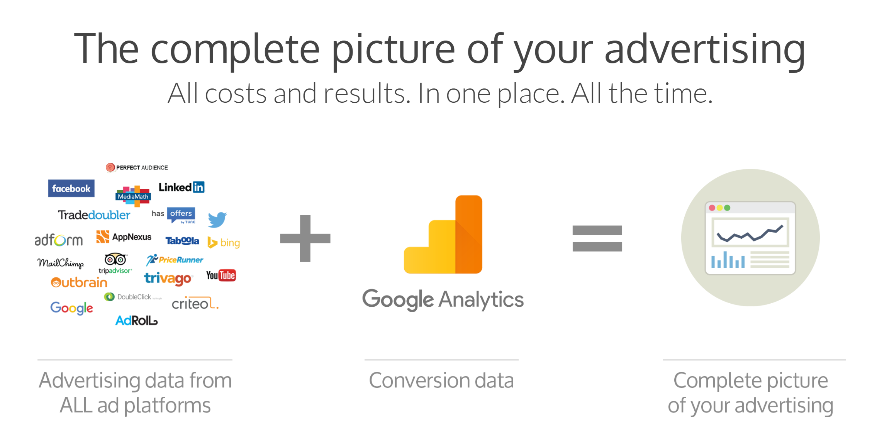
Use Cases:
Generating Reports – Informing stakeholders of the performance of your advertising efforts in a clear and easy-to-use dashboard.
All Channels – Funnel lets you pull data from every channel you can imagine, and you can set up different reports for each ad platform, blogging, organic, social, etc…
App usage data & analytics without the need for technical know-how
Data segmentation to determine the most important focal points of your app
Why We Use It:
For our mobile clients, we use Mixpanel as a quick and easy way to set up event-based analytics. Mixpanel data helps us suggest targeted app improvements based on the way users behave in apps.
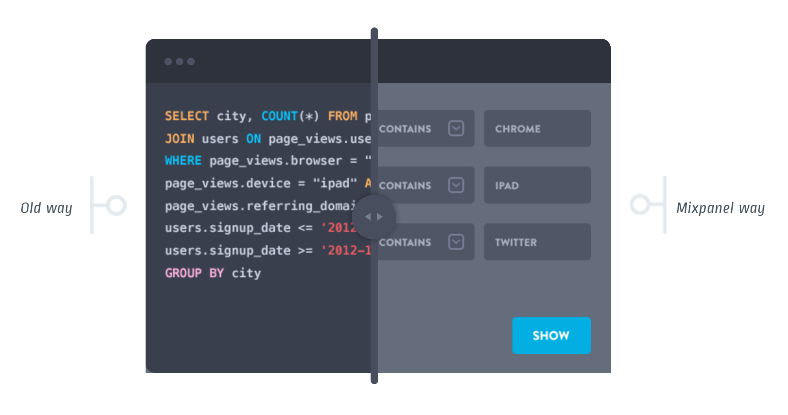
Use Cases:
Improved sign-ups – Data gathered from your app during the registration process can be used to make changes that optimize for more registrations, making signing up more painless for your users.
Cross-platform analytics – If you have a web and mobile app, you can use Mixpanel data to analyze how user behavior differs across platforms. This lets you know whether your mobile app is actually serving the right needs and use cases for your users.
Collaborative in-depth SQL and Python analytics workflow
Powerful interactive report builder
Why We Use It:
Mode Analytics is one of the marketing tools we use when we need to do some serious data science. We don’t need to bother our clients with the nitty gritty – just get them a data visualization that tells the full story.
User experience research through live site/app usage recordings
Website form completion tracking & analysis
Why We Use It:
We use Hotjar to see how people are interacting with the websites we’re working on. Click tracking heatmaps tell us what people are clicking on and give us insight into where they’re looking on different landing pages.
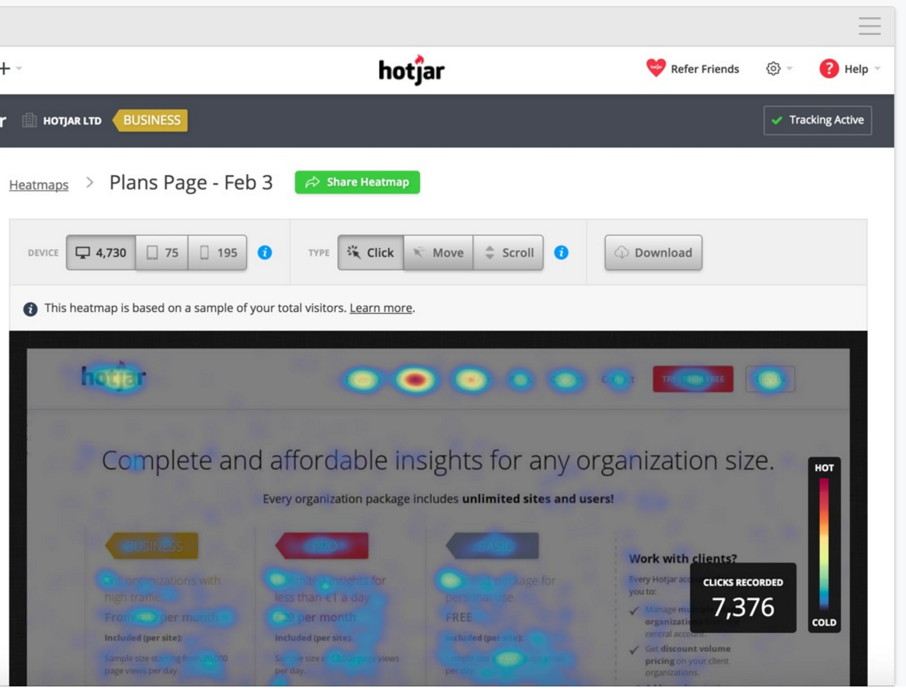
Hotjar’s features let us optimize for conversion across the entire funnel, following potential customers across entire websites step-by-step to see how they’re behaving and what may be driving them away.
Use Cases:
Heatmaps – Want to know exactly what elements and areas on your site are getting the most clicks? Hotjar has heatmaps that will tell you exactly where visitors are focusing. This can let you make CTA changes, copy adjustments, and hyperlinks that lead to more conversions.
Registration form data – If you’re not sure how your customers are behaving with your form fields, Hotjar has tracking that allows you to find problem areas. For example, if your form is too long and people are dropping off mid-registration, you’ll learn that from Hotjar.
Visit recording – Hotjar lets you see exactly how users are behaving on your site by recording their visits and giving you a playback. This lets you figure out which elements on your site/app might be confusing to them.
Facebook’s Ads platform is among our favorite marketing tools. From our own advertising to running ads for clients, we use Facebook to reach a highly targeted audience based on a variety of different behaviors and parameters.
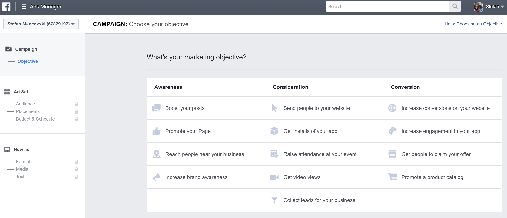
Depending on the client’s need and the audience they cater to, Facebook may or may not be a good place to advertise. We run small tests with different audiences to see what works and what doesn’t, doubling down or moving on depending on the data we gather.
Use Cases:
Interest audiences – People divulge a lot of information about their interests on Facebook, and those interests can be used to narrow down the audience you’re using for a given ad. One approach could be a competitor interest audience, where you target people who Like your competitors on Facebook.
Website retargeting – Facebook’s website tracking pixel lets you know exactly where in the funnel a user may bounce from your page. This lets you run retargeting campaigns referencing items or services they saw on your page to drive them back to your site.
Advertising on other websites via the Google Display Network
Keyword Planner for smart ads and content targeting
Why We Use It:
AdWords is critical to both our own advertising efforts and those of our clients. We use AdWords to target high-value, low-competition keywords, as well as to conduct brand defense advertising to prevent competitors from showing up on our / clients’ brand name searches.
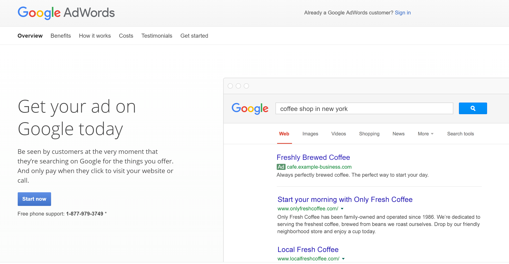
Use Cases:
Brand name defense – An ongoing PPC campaign that targets your own company’s brand names helps protect your business from aggressive advertising by competitors.
Google Display Network – You can have your ads appear on Google’s network partner sites, helping expand your reach in a targeted manner to sites that are relevant to your audience.
Keyword Planner – Want to know which keywords to target with ads or content? A keyword analysis in Keyword Planner will give you the information you need to make a smart keyword choice.
Name: Twitter Ads
Purpose:
Sponsored and promoted Twitter posts
Powerful interest-based and follower-based targeting
Lead Generation Cards – Twitter has a card for lead generation ads that lets you specifically drive signups and registrations straight from an ad.
App install ads – You can create app install card-based ads that let users download an app straight from a button within your ad, driving up app installs with your targeted audience.
Behavior-based targeting – You can target individuals and businesses based on behaviors such as salary, job title, sales revenue, and more.
Ads appearing on Bing, Yahoo, and MSN search results
Powerful keyword planning tool based on Bing search trends
Why We Use It:
In a similar vein to Google AdWords, we use Bing to have our/our clients’ businesses and ads show up on relevant searches.
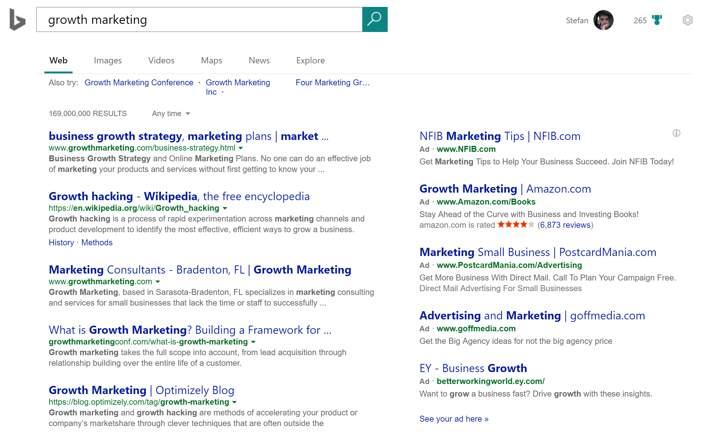
Use Cases:
See Google AdWords
Name: Pinterest Ads
Purpose:
Promoted Pins targeted to appear in the most relevant places on Pinterest
Pin targeting based on interests and preferences
Why We Use It:
Pinterest is a special use case for clients that sell products that make sense for the type of audience that visits the site. While it doesn’t work for, say, B2B clients, it certainly works for some eCommerce clients, helping us drive traffic to and grow their Pinterest following.
Use Cases:
High average household income – Pinterest is better than similar marketing tools because of the audience it reaches – high-income people with low spending inhibitions and a lot of disposable income. 2.Placement targeting – Pinterest lets you get your promoted pins exactly where you need them to be, targeting people based on the things they pin and the accounts they follow.
Advertising to a professional audience on LinkedIn
Combining powerful business data with user data on professionals
Interest targeting combined with business and professional data
Why We Use It:
LinkedIn ads can be expensive, but they can also be ridiculously powerful when properly targeted. We especially love using LinkedIn ads to grow our B2B and SaaS clients, as we’re able to tap into the exact audience they’re looking for.
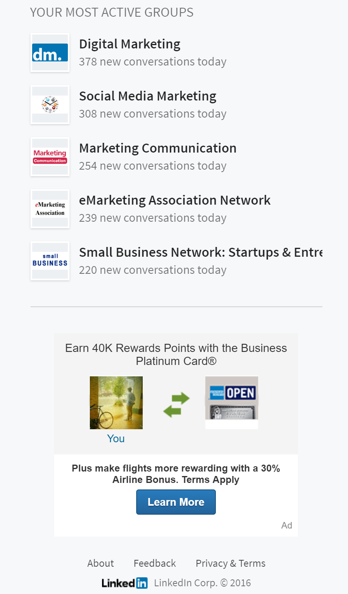
Use Cases:
Job title + group targeting – LinkedIn lets you combine two powerful targeting approaches – job titles and groups – into one powerful audience. Want to target only CMOs who are part of marketing LinkedIn groups? You can do that, and much more.
Professional audience – The most important benefit of LinkedIn over Facebook and Twitter is the active professional audience it attracts. This makes it invaluable for reaching people based on what they do and who they work for.
Sponsored content – You can publish content updates to attract followers for your company and grow a readership base for your content.
Videos of real users going through your platform with their comments and concerns
Insights into whether your UI/UX design is actually clean and intuitive for your users
Why We Use It:
UserTesting is one of those critical marketing tools that applies to any platform that wants to retain users. A lot of businesses create web and mobile apps without doing any user experience research to start with. The end result is a lot of assumptions about what works best.
Using UserTesting to see the real, live actions and feedback of a group of early adopters can give valuable information about how and why a client’s app may confuse or drive away users.
Use Cases:
Better onboarding – UserTesting users are first-time registrations and they go through your onboarding process. The feedback they give on its effectiveness can help you create a better onboarding flow.
Conversion optimization – UserTesting isn’t just for your web app – it’s also for any page on your site. Want to test the effectiveness and clarity of your pricing page? You’ll learn quickly whether the page is driving conversions or increasing bounce rate.
Beta testing – There’s nothing worse than launching a broken app and seeing terrible reviews roll in. UserTesting can help you uncover bugs, crashes, and missing features before you officially launch your app.
Building & publishing landing pages without any developer involvement
Mobile & web responsive landing page builder made for marketers
Landing page testing & optimization for conversion
Why We Use It:
Out of the many marketing tools available for landing page builders, Unbounce is Ladder’s go-to. Whenever conversion rate optimization is the goal, we build a landing page for our clients. This lets us control for CTAs, copy, and design, allowing our in-house design team & strategists to collaborate on conversion-focused LPs.
Ladder powers strategy and performance solutions for fast-growing brands Talk to a strategist →
Growth is a high velocity game.
Sign up to our newsletter to stay up to date with all the latest movements in the field.
🎉 Thank you! We will be hitting up your inbox soon! 🎉
Oops... Something went wrong! Please try submitting again.
More from Ladder Blog
Using AI Without Exploiting Artists
The art world is being disrupted by generative AI, and artists aren’t happy. Generative AI models like DALL-E, Midjourney, and Stable Diffusion were trained by scraping millions of images from the internet, without permission. Artists claim this violates copyright, while the companies training these models argue this falls under fair use.
Beyond A/B Testing: The Future of Data-Validated Insights in Business
In the world of digital marketing and data-driven decision-making, creative testing is a pivotal tool in achieving business growth. Gone are the days of relying on gut feelings or guesswork; now, business decisions are powered by data-validated insights, meticulously collected, analyzed, and validated. This transformative process empowers businesses of all sizes, from established enterprises to budding startups, to thrive in an ever-evolving digital market. This article looks at the practical applications, challenges, and innovative transformations associated with creative testing, offering you valuable insights and actionable strategies to implement in your own digital marketing efforts for achieving growth and success.
![55 Marketing Tools We Use to Grow Startups [UPDATED]](../6098e41066be8b2b7cb437cd/6138ec469db4874bf4499f05_55%20Marketing%20Tools%20We%20Use%20to%20Grow%20Startups%20%5BUPDATED%5D.jpg)